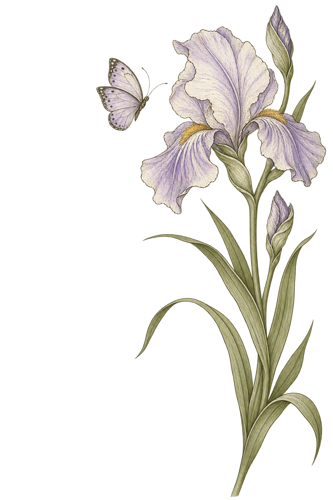

PERSONAL JOURNAL · VOL. 33
Notes about me
唱歌 / 跳舞
旅行 / 拍照
和每一口好吃的

a soft heart& a curious soul
音乐 · 镜头 · 生活很高兴认识你 ♡
01 / ABOUT ME
Hello, I'm 33一点点关于我
Hi～我叫廖珊珊，毕业于广州理工学院，专业学的是音乐表演。
我是一个安静的观察者，慢热、感性，共情力强。需要一点时间才会打开，比起说，更擅长倾听。
认真听你把话说完。
情绪、碎碎念、说不出口的，都接得住。
朋友常常来找我倾诉、聊感受。这里，永远有人认真听完。
给新朋友的小提示：
不用急着找话题，我们可以慢慢熟悉。
不用急着找话题，我们可以慢慢熟悉。
03 / LITTLE MOMENTS
Collecting the world把世界收进相册
喜欢拍照，走到哪都想把看见的留下。
镜头是我收集世界的方式。
点击照片，看看我眼里的世界
02 / MY JOURNEY
Finding my voice我的声音，走过的路
从音乐到镜头，再到品牌与公众之间。
每一段经历，都留下了新的自己。
CHAPTER 01
音乐老师
把喜欢的事变成日常。
教唱歌、带课堂，把「开口唱」拆成一件件小事，教给小朋友。
Music & little voicesCHAPTER 02
服装直播
从讲台，走向镜头。
讲品、和观众实时互动，练出了表达、临场和不怯场。表达力，是一场场播出来的。
Growing in front of the cameraCHAPTER 03 · NOW
媒介
在品牌和公众之间，传递声音。
对接媒体与资源，帮品牌被更多人看见。
Connecting stories & people04 / A TASTE OF LIFE
A little taste of joy好好吃饭，好好生活
非专业美食品鉴家一枚。
美食，就是生活的治愈良药。
我是 33，很高兴认识你～
唱歌、跳舞，看看世界。
也愿意认真听你，聊聊你的世界。